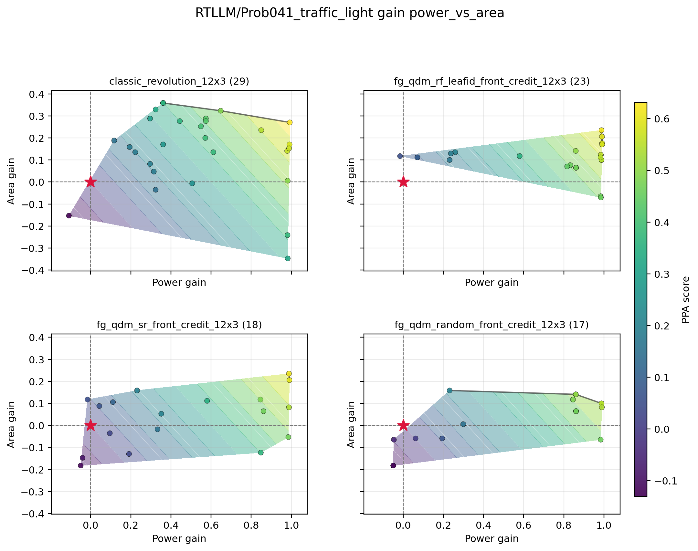

T100 is the RF leaf-ID front-credit FG-QDM smoke. It improves over the SR and random FG-QDM controls, but classic REvolution remains ahead on mean hypervolume and all per-problem HV comparisons.
| Arm | Mean HV | Mean Pareto points | Mean reference-beating count |
|---|---|---|---|
classic_revolution_12x3 |
0.190331 | 3.00 | 17.33 |
fg_qdm_rf_leafid_front_credit_12x3 |
0.156553 | 2.00 | 12.00 |
fg_qdm_sr_front_credit_12x3 |
0.153384 | 1.67 | 9.33 |
fg_qdm_random_front_credit_12x3 |
0.104805 | 2.67 | 7.00 |
`Prob041_traffic_light` shows the main visual read: T100 is closer to classic than the SR and random controls, but classic still has the broader area-power front.
